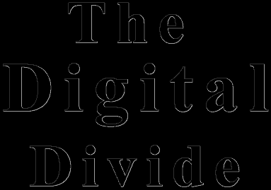

"The benefits and defecits of a new technology are not distributed equally. There are... winners and losers" (Postman 9).
"Access to the information highway may determine the basic ability to function in a democratic culture" (Ratan 25).
